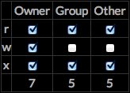

In Unix-like operating systems, chmod is the command and system call which may change the access permissions to file system objects (files and directories). It may also alter special mode flags. The request is filtered by the umask. The name is an abbreviation of change mode. (Wikipedia)
This plugin provides a sidebar widget which can be used to adorn and supplement the functionality of your page. Creating a tutorial on file permissions? Place this into your sidebar. Do you run a page covering Linux issues for noobs? Place this into your sidebar and provide some utility that gives people a reason to bookmark your page and keep coming back.
This plugin has been tested to work with WordPress 3.9. This widget does not enforce its own colors or fonts, and should appear consistent with the rest of your themed page content. Tested to work on desktop or mobile.
Install the plugin as you would install any WordPress plugin. Activate it. Then from the administration interface of WordPress, you can click Appearance -> Widgets. Simply drag the Amoratis CHMOD widget into the sidebar configuration display at a position of your choosing. When you visit the front page of your website, there will be a CHMOD converter in your sidebar.

An example of how this widget appears in a sidebar.
Direct Download Link: http://chmod.jackamoratis.com/2/amoratis-chmod-plugin.zip
Copyright (C) 2014 Jack Amoratis
This program is free software: you can redistribute it and/or modify it under the terms of the GNU General Public License version 3 as published by the Free Software Foundation.
This program is distributed in the hope that it will be useful, but WITHOUT ANY WARRANTY; without even the implied warranty of MERCHANTABILITY or FITNESS FOR A PARTICULAR PURPOSE. See the GNU General Public License for more details.
You should have received a copy of the GNU General Public License along with this program. If not, see http://www.gnu.org/licenses/gpl.html
GNU General Public License Version 3